Le Signe—Libérer les mots
4 formats 42 x 29,7 qui forment un A1
Imprimé en risographie sur papier recyclé
Toulouse—Novembre 2017
Libérer les mots de leur devoir de sens. Un travail est effectué sur le texte « 100 façons de disparaître » extrait du site d’information
Lundi Matin. Un texte qui exprime une certaine révolte vis à vis de l’hyperconnectivité, et un besoin urgent d’échappatoire, de retour
à une temporalité ralentie et à une authenticité qui permettrait d’apprendre à contempler de nouveau. Les mots sont ici appréhendés
comme matière et module visuel, fonctionnant au même titre qu’une illustration ou une image. Ils deviennent peu à peu des signes
desquels une quête de sens n’est plus forcément possible et nécessaire. Il en émane alors une dimension plus poétique et contemplative.
Les mots ne sont plus rapprochés par un rapport «signifiant» mais uniquement par une relation formelle. Ces considérations amènent
à questionner l’utilisation du caractère et sa lisibilité mais aussi à questionner la place du «traducteur», de celui qui retranscrit
le texte, le met en forme. Il devient malgré lui (ou pas) auteur de celui-ci car la forme participe au sens et à la réception du texte.
Ce projet est construit de façon à faire voyager l’oeil dans les couloir visuels et pousse également à remettre en question les limites
du format, à «fabriquer des bords» mais aussi tout simplement à interroger l’objet éditorial, sa construction, sa légitimité.
Pour aller plus loin...
Paulo de Cantos — Il appréhende le texte comme matière et module visuel, fonctionnant avec et au même titre
qu’une illustration ou une image. Le souvenir d’un temps où le texte avait un rapport visuel et cognitif reste
très ancré dans sa pratique. L’outil typographique est au centre de la production de l’image. Il utilisait
des caractères de plomb et réfléchissait à ce que l’outil et le «mode de production» impliquait à la forme.
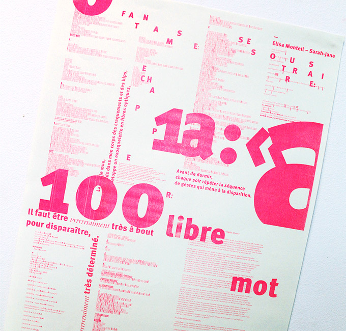
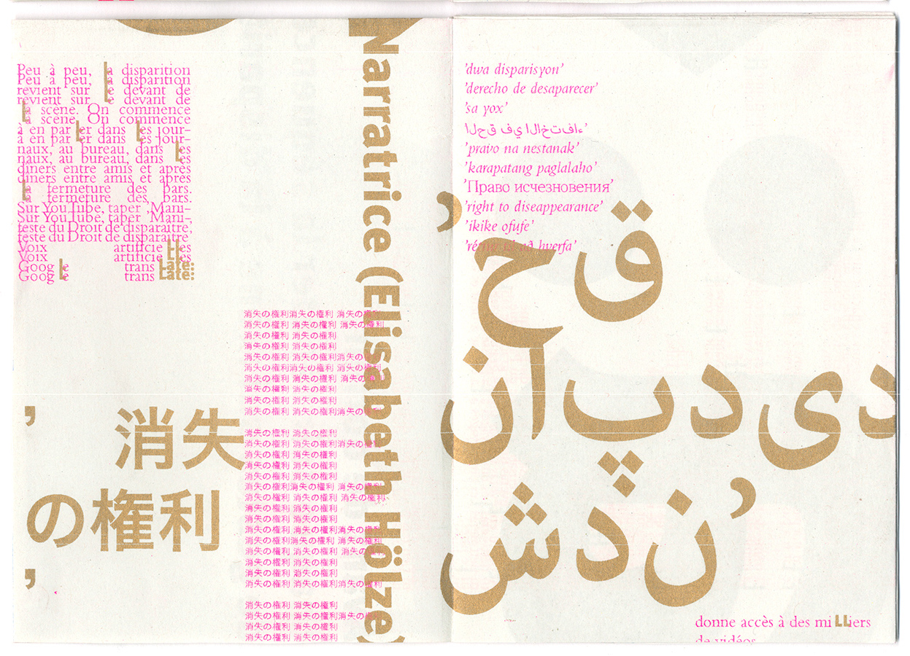
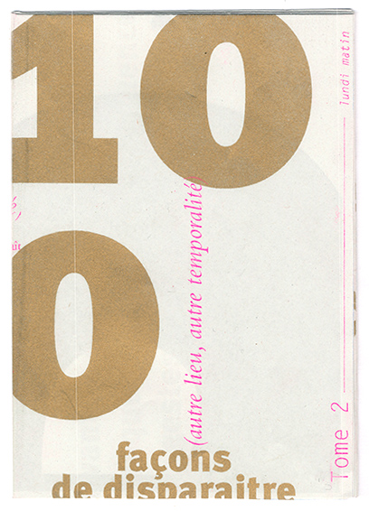
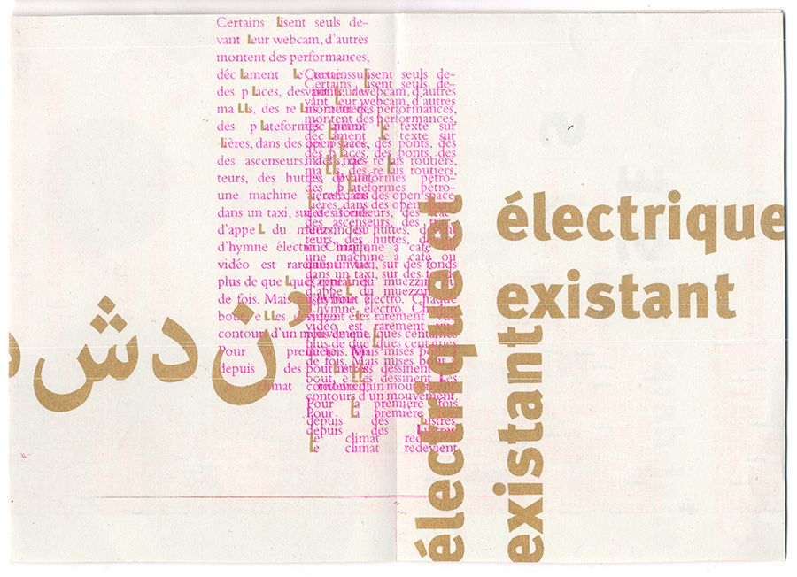
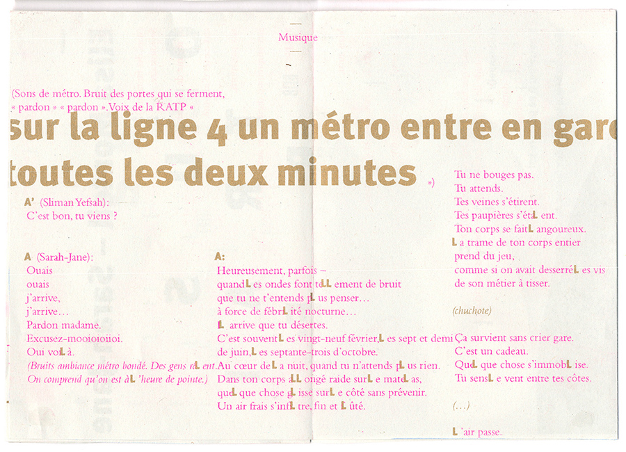
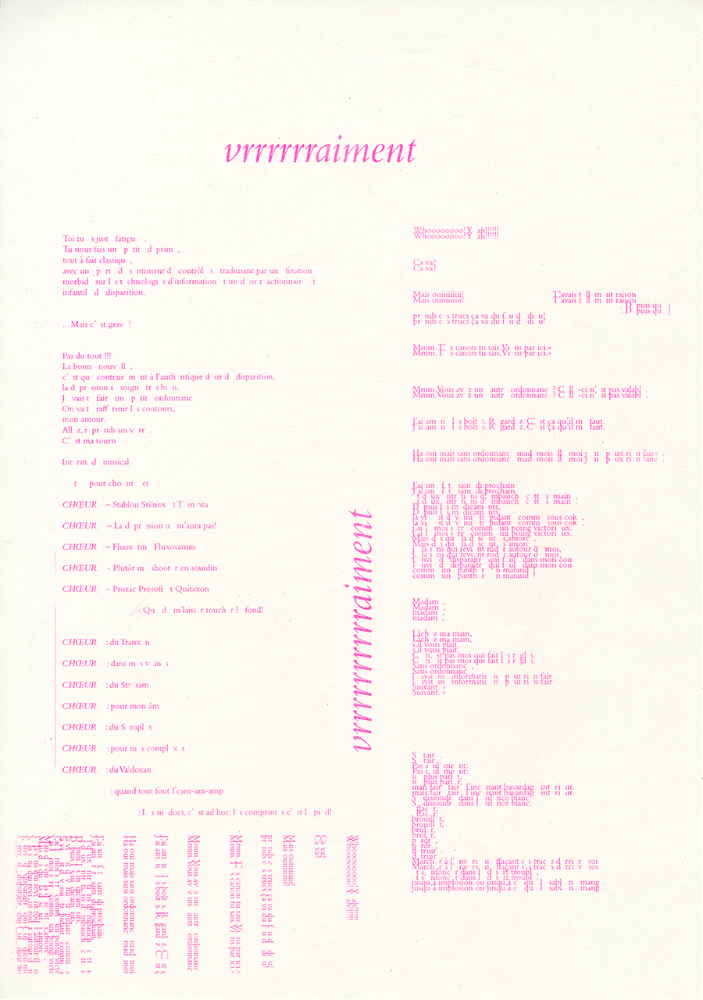
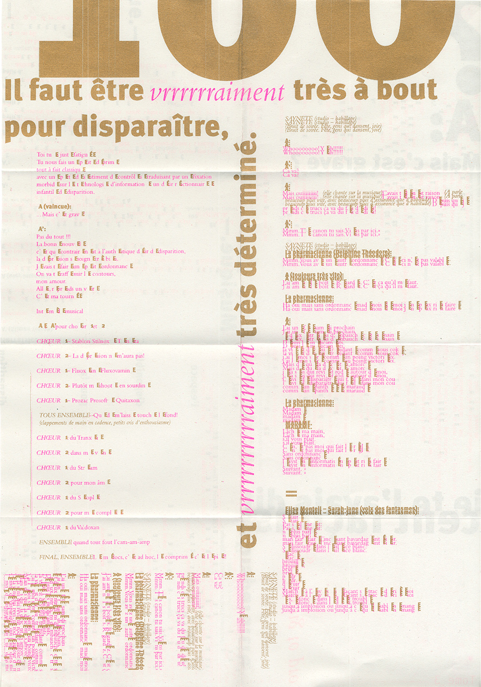
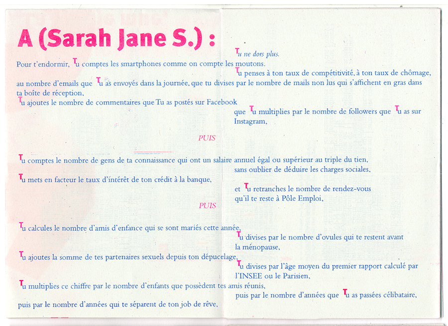
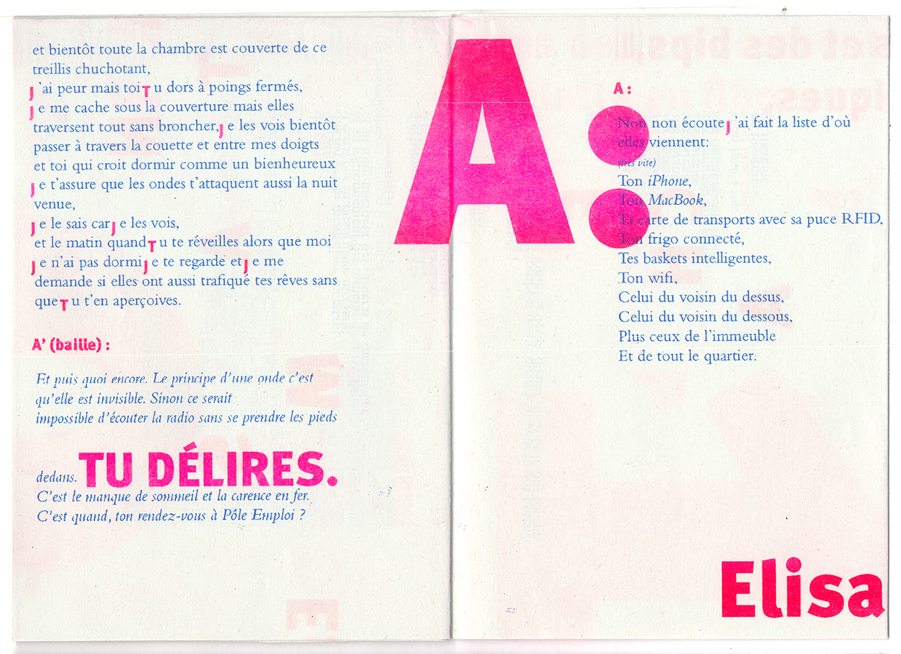
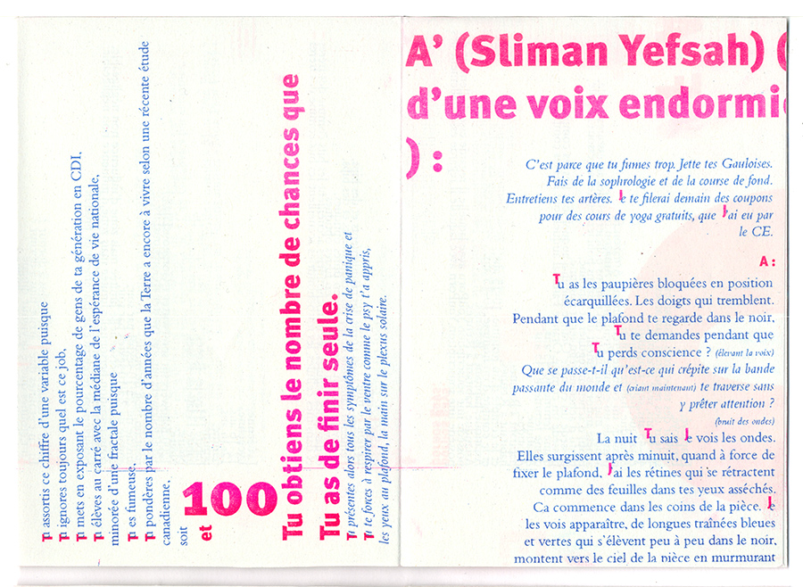
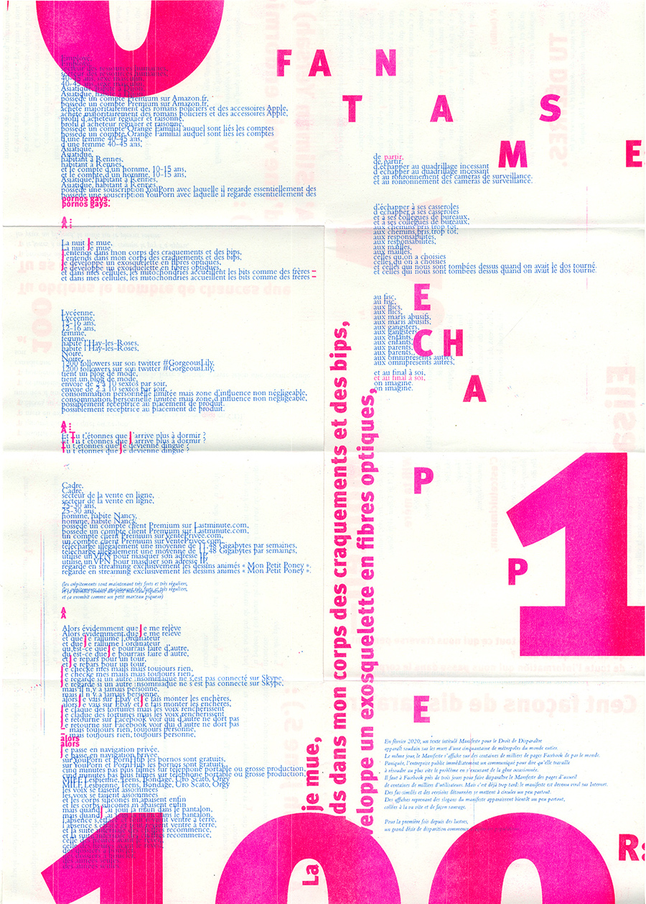
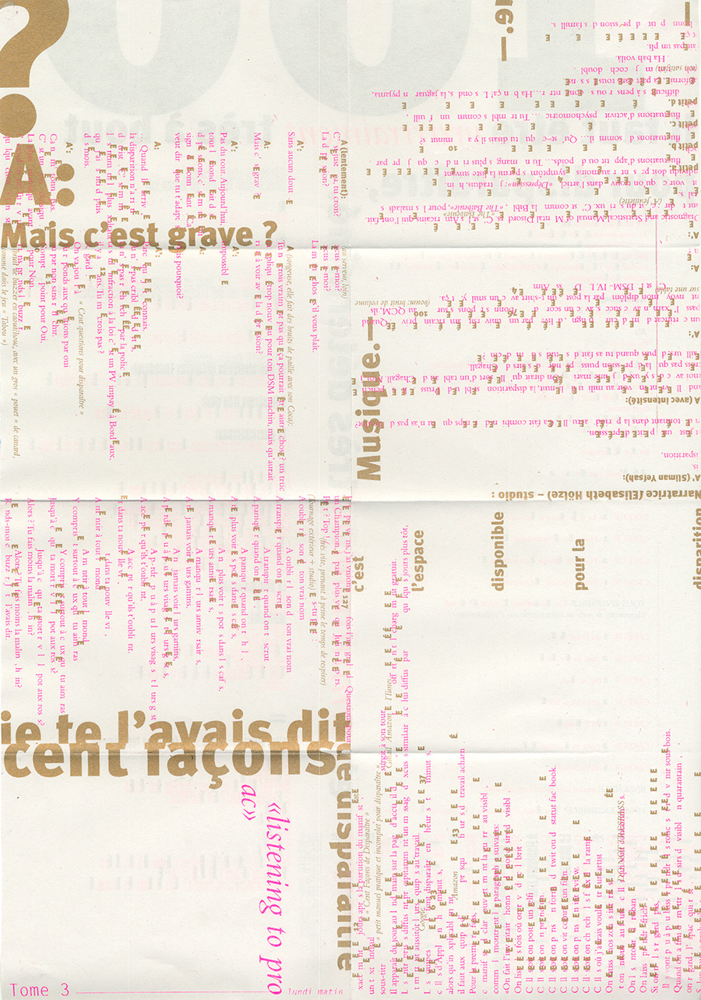
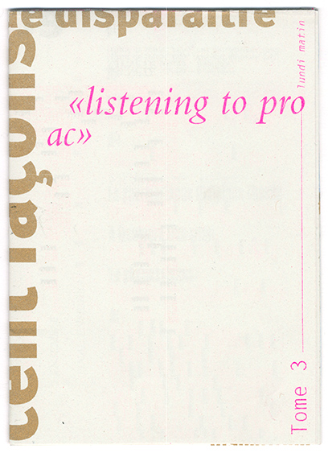
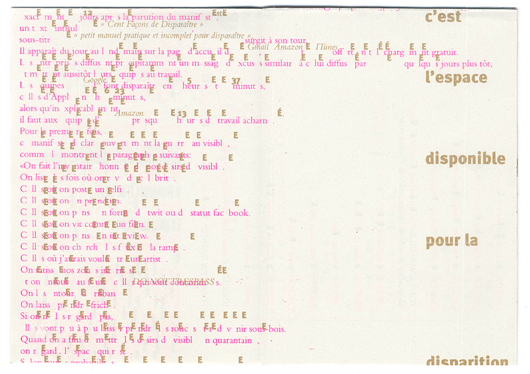
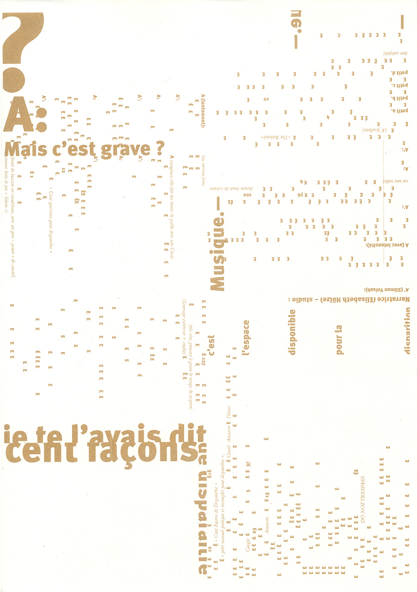